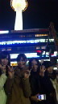

| 2012/02 27 Mon | ひめたん(* ゝω・*)ノその92 |
ミニ握手会総括書きまっせーーー(。・x・。)/
◆1日目in広島
さゆりんご
・
ななせまる
・
ろってぃー
・
ひめたん

広島。ひめたんの地元。
本当は選抜入ってからちゃんと「頑張っとるよ(^^)」って言いたかったけど
結果みなさんからエールをいただくことができました。
情けないけど、今回はみなさんの優しさに甘えて、背中を押してもらってよかった。
広島県民のみなさんありがとう。
今度帰ってくるときは堂々と「頑張っとるじゃろ(^^)?」って言います!約束する!!
◆2日目in大阪
さゆりんご
・
ななせまる
・
ろってぃー
・
ひめたん
大阪。
3人を見ててもわかる通り、とっても元気な街ですよね!
正直、どんなイベントになるかなとか、1人だけぽつーんてなったらどうしようとか
勝手にぐるぐるか...っ失礼('・ω・`)
ぐるぐる考えてました。
終わってみて気付きました。1番テンション高いの自分じゃん!わら
大阪また行きたい!全握楽しみですっ(*/ω＼*)♪ありがとうございました!
◆3日目in滋賀
まいやん
・
ななせまる
・
ろってぃー
・
ひめたん

写真は京都タワーどすえ。
滋賀。
琵琶湖に沿って車走ってきたから、きらきらの琵琶湖を永遠に見てた♪
滋賀は1番天井が高かった気がする。1番上の方までひめたんぱわー届いたかな?
近い人はほんと近くてきゃー恥ずかしいーみたいな(//ω//)
ほんとちらっちら目が合うから、終始たかやま★
握手会も楽しかったよ(^^)開始時間遅かったのに最後まで見守ってくれてありがとうございました!
◆4日目in富山
まいやん
・
ななせまる
・
ろってぃー
・
ひめたん
富山。
サンダーバード号降りた瞬間の空気の気持ち良さ!
雪山に飛び込みたかったけどびしょびしょになっちゃうからね。
移動中の車の中でもずっと「雪めっちゃきれいー!」って言ってました。
日曜日の富山は人がいっぱいで!ずーっと立ちっぱだったですよね?
声援が響いてて嬉しかったです。ありがとうございました!
このミニ握手会でたくさんの方に初めましてが言えました!
乃木坂46のこと、ひめたんのこと、ちょっとでも好きになってもらえたら嬉しいです。
これからもブログ遊びに来てねっ♪
そして今回ひめたんは広島、大阪、滋賀、富山におじゃましたのですが
九州、四国、関東、東北、北海道にお住まいの方、会いに行けなくてごめんね(*ノω;*)
いつも応援してくださってありがとうございます。
いつか必ずおじゃまするから、そのときはよろしくお願いします♪
そして今回乃木坂46デビュー記念ミニ握手会にご協力くださったイオンモールさん
本当にありがとうございました!!!
楽屋でもとてもよくしていただいて、
こりゃイオンでお買い物するしか(o>ω<o)って思いました。心からっ!
また機会があったら、そのときはよろしくお願いします♪
 握手会のィイ所はなんですか??
握手会のィイ所はなんですか??
1人1人のファンの方と握手できて、お話しできるところ!
実際にお顔見たいし、声聞きたいし♪
直接会った方がひめたんのこともっと知っていただけると思う(^^)
ひめたんがセンターとれるまで、全力で応援し続けていってもいいですか??
ぃや、ずっと好きでいていいですか?
言いましたね?
ずっと好きでいてくださいよ(//ω//)?
そんなこと言ってもらえるなんて嬉しい!
もちろんいいに決まってるじゃないですかー♪
 大阪のイベントからひめたんのファンになったんだけど遅すぎたかな?大丈夫かな?
大阪のイベントからひめたんのファンになったんだけど遅すぎたかな?大丈夫かな?
うん大丈夫っ。
遅いなんてことないですよー♪
今からどんどんひめたんのこと知ってくれたら嬉しいです∩^ω^∩★
握手会楽しそうじゃけど、めっちゃ緊張しそう(汗)
どうやって緊張をほぐしてくれる?
ひめたんと握手してたら緊張なんてどっか行っちゃうと思う...
だって緊張させる暇を与えないもんっ(^ω^)/
大阪のミニ握ではネタにこまったけど次ひめたんと握手する時は何て言ったら良いんやろ?
本当に困ったらひめかサンプラー使ったらいいと思うし、
自己紹介をしてもらっても、ひめたんが自己紹介するのもいいと思う★
そうだ。
ひめたん京都のファミレスに傘忘れてきたんよね('・ω・`)
もし見つけたら教えてね♪わらっ
(*´・ω・*)ひめたん
コメント(78)
2012/02/27 21:24